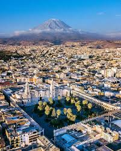
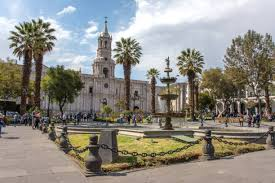
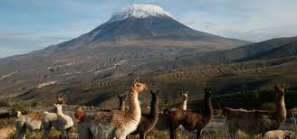

✨ La Ciudad Blanca
Arequipa, conocida como la Ciudad Blanca, es la segunda ciudad más importante del Perú. Su nombre proviene del color de sus construcciones hechas de sillar, una piedra volcánica de tono blanco. Ubicada al pie del majestuoso volcán Misti, Arequipa combina historia, cultura y belleza natural.
🏛 Arquitectura y Cultura
La Plaza de Armas es el corazón de la ciudad, rodeada por la Catedral y construcciones coloniales. El Monasterio de Santa Catalina, un verdadero tesoro arquitectónico, muestra la riqueza cultural e histórica de Arequipa. Sus casonas y templos reflejan la influencia española fusionada con el arte local.
🌋 Naturaleza y Paisajes
La ciudad está rodeada de impresionantes volcanes como el Misti, el Chachani y el Pichu Pichu. Además, muy cerca se encuentra el famoso Cañón del Colca, uno de los más profundos del mundo, donde se puede observar el majestuoso vuelo del cóndor andino.
